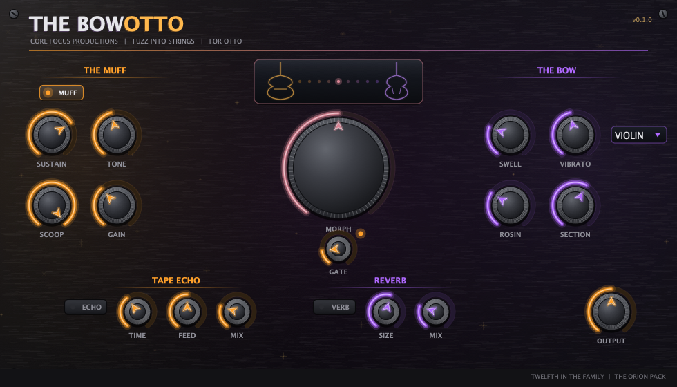

Field Manual · v0.2.0

A Big Muff Pi into a vintage British stack — and one knob that turns the guitar into a violin. The move comes from the records this plugin is named for a fan of: Siamese Dream and Mellon Collie put walls of Muff guitars next to real string sections, treating guitar and strings as the same gesture at different speeds. MORPH puts both ends of that gesture under one hand.
The violin is not an EQ curve. It is THE BOW's modal instrument body — 72 resonators built from published violin measurements, signature modes and the 2.3 kHz bridge hill included — driven by your own strings. Because it processes the audio instead of re-synthesizing it, it works on chords and keeps your dynamics.
Drives two cascaded feedback-clipping stages — the circuit reason a Muff sustains for days where a one-stage fuzz just distorts. Fuzzy even at the bottom of the knob, exactly like the pedal.
Blends the stack's lowpass and highpass branches. Where they overlap they fight, carving the famous mid scoop around 750 Hz.
Full up = stock Pi notch. Turn it down and the notch's own band fades back in — the mids-forward mod players pay techs for, on a knob.
The vintage stack behind the pedal: two warm triode stages on the edge of breakup. It thickens what the Muff sends it instead of re-distorting everything into one flavour.
The centre of the plugin. Equal-power crossfade from the guitar cab to the violin body — it replaces the cab rather than stacking on it, because both are the instrument's radiating box and running both gives you neither. Anywhere between "amp with strange sustain" and "string section" is a sound.
A bowed note has no pick attack — this is the single strongest cue. Every onset is ducked and fades in at the SWELL rate (60 ms–1.2 s). The detector reads your picking 5 ms ahead of the audio so the transient never leaks, and it ignores the beating inside a chord.
Bow force — the same thing that makes a real violin bright or breathy, and the most important knob in this half of the plugin. Down low the string is barely driven; up high it is pushed into full Helmholtz motion. A bowed string's bridge force is a sawtooth: every harmonic present, sustained for as long as the bow moves. That is what this knob builds out of your pick attack, and it is why the morph sounds like an instrument instead of an EQ.
6.5 Hz player vibrato — real pitch modulation (up to ~±55 cents) plus the small volume component a rocking finger adds. Measured violin vibrato runs 5.1–8.2 Hz and about 40 cents in first position.
The friction layer: noise shaped to your note's envelope, sitting up on the bridge hill where bow scrape actually lives. Silent in the gaps.
Fans the soloist out into four desks — detuned, humanized, spread across the stereo field. The Pumpkins move wants this up.
Violin, viola or cello — three measured bodies. Cello under a low tuning is its own instrument.
| Control | What it does |
|---|---|
| GATE | Hysteresis gate with a square-law close — 74 dB of Muff gain lives behind it, so it shuts hard. |
| TAPE ECHO | Repeats darken like oxide; a slow wow moves the read head. TIME / FEED / MIX. |
| REVERB | SIZE / MIX. Try it after the SECTION for the full Tonight, Tonight. |
| OUTPUT | ±24 dB into a peak guard that never passes −0.2 dBFS — a tested contract, not a hope. |
The morph was 28 dB quieter than the guitar path and everything above 800 Hz had collapsed — it "just got quiet and sounded like nothing good". Root cause: a violin body filter over a decaying pluck can only be an EQ'd guitar. A bowed string sustains and radiates a sawtooth. Added BOW DRIVE (sustainer + asymmetric saturation) which supplies both the missing 30 dB and the missing harmonics, plus the BOW knob. Level now holds within 0.4 dB across the whole MORPH sweep; harmonic slope lands at −6.4 dB/oct against the −6.0 target. Bench 15 → 17 tests.
Muff + vintage stack + greenback cab; full violin engine with THE BOW's modal body; gate, tape echo, reverb; 15-test bench (all passing), 30 s soak clean. Five bugs found by the bench before first ship — see the README for the honest list. Untuned by ear; Otto's ears are the real test.